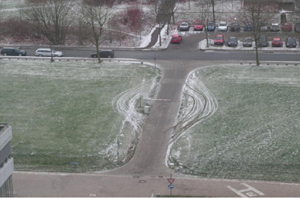

Guest post: Open data for smart recycling with 6element
By Alexandre Vallette
For public services and companies wanting to innovate fast, ANTS is an open innovation lab with people ranging from data scientists to designers that uses their collective intelligence to manufacture innovation. Unlike startups, ANTS is focusing on long term partnerships and projects to foster impactful results.
6element is our contribution to modernise the way recycling centres operate with the help of open data.
We know that a huge amount of waste is either incinerated or buried in the ground every month. Meeting with the local government representatives of the Gironde Department in France, we discovered that half of the waste produced in the area came from recycling centres where there is a lot of room for optimisation.
On average, one person every 25 seconds, goes to the one of the couple recycling centres. But most often people all come at around the same time. After a lot of waiting (sometimes hours), there is a chance the recycling dumpsters matching what they want to throw away is full. But no one wants to come back home with their waste, and we know what happens: wastes get busted in the wrong place.
We estimated that a better management of the attendance could lead to about 25% of savings from the irrecoverable waste. This is millions of tonnes. We believe open data is the missing element waiting to show its potential.
6element is a project where we use predictive modelling to facilitate the access to recycling centres.
There is nothing magical about predicting future trends. The phenomenons we analyse are rational and quantifiable. We use various open data sources like OpenStreetMap and open data portals to collect interesting contextual information that could be correlated to waste production.
For example, the amount of green waste correlates with different factors such as the proximity to green area, the total surface of private gardens present in the surroundings or even the water consumption and the amount of gardening equipment sold during the week.
For every kind of waste we make a list of all the correlating factors we can measure and then create a mathematical model to predict the attendance at any recycling centre and well as the precise need.
We are able to predict that when a sunny day follows a rainy day, the recycling centres close to dense area of population with green areas have an increase in attendance. We are able to measure the influence of the period of massive interior work where there a lot of rubbles.
These examples are simplistic and most of could have guessed them but they illustrate what is possible, because in reality we use thousands of different factors that are all intertwined to make our predictions.
A solution built from scratch
For the model to be accurate, we need an accurate measurement of the affluence. And it is not always the case with open data mostly because it is a young practice.
For the moment, it is sometimes scarce and inhomogeneous. Each local government has a different way of performing measures and different frequency when collecting attendance data. None measure how much dumpsters are filled. Usually institutional open data used to be internal data which had no reason to be homogeneous amongst producers. Thus reusing open data from multiple sources is challenging. We look forward to the day there will be accepted standards and good practices on the way data should be collected, stored and exchanged.

For now, we have to hack our way through. We came up with an inexpensive and efficient solution. In a few weeks, we invented a sensor with a digital camera and a processing unit that is able to measure how many cars are present and how full the containers are.
This sensor allows any recycling centre to generate reliable, accurate and standardised data in real time. The sensor is quite inexpensive to build and relies on an open hardware card, the Raspberry Pi.
The innovation here is that we implemented artificial intelligence inside the sensor so that it only has to transfer a few numbers; the picture never leaves the camera. This is both efficient in terms of the amount of data needed to be sent and on the privacy side of things. We do not spy on anyone, we only count anonymously the number of cars.
The next step is to provide a mobile application that indicates the best available recycling centres according to the type of waste an individual wants to get rid of. The application will be able to tell when is the best moment to go while guaranteeing you that the container is not full.
Moreover, the application will allow to connect to people or companies that might be interested in certain waste. There is a whole economy of reuse that is coming. We can feed it with our well qualified sources of wastes that then become elements to be exploited.
Finally, the data generated by the application will be used to better understand recycling behaviours and give policy makers the necessary objective framework to take better environmental decisions.
Alexandre Vallette is a data scientist at ANTS and Co-Founder of SNIPS. His passion for machine-learning applied to geographical data and networks comes from his Phd in chaos theory. An open data enthusiast, he is committed to showing how open innovation can lead to better governance and economy.